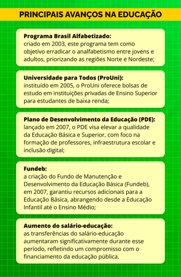

Avanços progressistas
Em 2002, em um contexto marcado por profundas tensões políticas e sociais no Brasil, por uma profunda crise econômica e com uma desigualdade crescente, o programa de retomar políticas sociais que priorizassem a inclusão, a justiça social, a defesa dos direitos dos trabalhadores, a educação e a saúde, além do combate à fome e à pobreza, ganhou força.
Impulsionado por uma forte mobilização popular, o novo governo vitorioso nas urnas tem como políticas prioritárias o fortalecimento da concepção emancipatória na educação em geral e na Educação Profissional. Observa-se, no infográfico abaixo, algumas das iniciativas mais relevantes na educação em geral.

Título: Principais avanços na educação
Fonte: Prosa (2025c).
Medidas foram tomadas com o objetivo de tornar a educação profissional brasileira mais integral, mais pública e mais acessível aos diversos setores da população trabalhadora e seus filhos. As principais medidas envolvendo o MEC e o MTE são:
- Relações de parceria: o reestabelecimento das relações de parceria e complementaridade entre os dois ministérios, alinhando as concepções e estabelecendo a complementaridade das ações.
- Cursos integrados: o retorno da possibilidade de cursos integrados (Educação Básica e Profissional), garantindo simultaneamente a terminalidade e o prosseguimento dos estudos, com a revogação do decreto nº 2.208/97 e sua substituição pelo decreto nº 5.154/2004.
- PROEJA: a criação do Programa de Integração da Educação Profissional à Educação Básica na modalidade de Educação de Jovens e Adultos (PROEJA) – Decreto nº 5.478/2005, e posteriormente o Decreto nº 5.840/2006 –, que estabeleceu a meta de 10% das matrículas nas instituições federais para esta modalidade. Essa mudança permitiu que a população excluída da escola retornasse para obter certificação escolar juntamente com o diploma de curso técnico ou certificado de qualificação profissional.
- Rede federal: a revogação da proibição de criação de novas unidades da rede federal de Educação Profissional que estava em vigor desde 1994, por meio da Lei nº 11.195/2005.
- Extinção do PROEP: a não renovação do Programa de Expansão da Educação Profissional (PROEP), criado em 1997, sendo substituído pelos Programas de Expansão da Rede Federal e Brasil Profissionalizado (expansão das redes estaduais), lançados em 2005 e 2007, respectivamente, e financiados com recursos públicos.
- Cursos técnicos integrados: o estabelecimento de metas para a oferta de cursos técnicos integrados ao Ensino Médio tanto pela rede federal em expansão quanto pelas redes estaduais. Essa medida ocorre como contrapartida à assistência financeira e técnica para implantação das escolas e centros de Educação Profissional.
- Plano Nacional de Qualificação (PNQ): a substituição do PLANFOR/MTE pelo PNQ, em 2003, com carga horária média dos cursos aumentada para 200 horas. A partir disso, houve o realinhamento de objetivos, recursos e parcerias com as ações governamentais, priorizando mulheres, negros e indígenas. Além da obrigatoriedade da introdução de conhecimentos sobre o mundo do trabalho, tornando a qualificação "social e profissional", o PNQ também institucionalizou a negociação coletiva da qualificação por meio de planos setoriais de qualificação.
- Aprendizagem: a retomada dos cursos de aprendizagem, ação gratuita e obrigatória do Sistema S, com acompanhamento e fortalecimento da fiscalização do MTE, além da reformulação legislativa (Lei nº 11.180/2005 e Decreto nº 5.598/2005) que ampliou a idade máxima para 24 anos e adotou arcos ocupacionais que ampliaram as oportunidades dos aprendizes.
- Estágio: a constituição do Grupo Interministerial sobre Estágio (2003/2004), cujos estudos fundamentaram a reformulação da legislação (Lei nº 11.788/2008), definiu o estágio como um ato educativo com salvaguardas contra sua utilização como trabalho precário.
- Certificação profissional: a constituição do Grupo Interministerial sobre Certificação Profissional (2004-2007), que embasou a proposta do Sistema Nacional de Certificação (não implantado) e inspirou a Rede Certifica da Rede Federal (2009), visando o reconhecimento social dos saberes dos trabalhadores em um viés inclusivo.
- ProJovem: a instituição do Programa Nacional de Inclusão de Jovens (ProJovem) no âmbito da Política Pública da Juventude, pela Lei nº 11.129/2005 e o Decreto nº 5.557/2005. Inicialmente, era focado na escolarização e profissionalização via arcos ocupacionais para jovens fora da escola ou do mercado de trabalho nas capitais, posteriormente ampliado para as vertentes adolescente, urbana e rural (Lei nº 11.692/2008).
Neste contexto, foram reforçados mecanismos para institucionalizar a política pública de Educação Profissional, buscando torná-la permanente e de Estado, superando um histórico de ações episódicas. Destacam-se, abaixo, as seguintes ações e suas respectivas normativas.
De modo a institucionalizar a EPT, houve a reelaboração e ampliação, por meio da Lei nº 11.741/2008, a LDBEN, do capítulo III “da Educação Profissional”, agora denominada EPT. As modificações, sobretudo do Artigo 39, consolidaram os princípios do Decreto nº 5.154/2004, reforçando a vinculação da EPT com a Educação Básica e a integração curricular.
Um outro mecanismo de institucionalização foi a introdução, no Fundo de Desenvolvimento da Educação Básica (FUNDEB), da possibilidade de financiamento da Educação Profissional integrada ao Ensino Médio, incluindo a modalidade de EJA, executada por estados e municípios.
Do ponto de vista do fortalecimento das redes públicas, foi dado apoio à expansão das redes estaduais de EPT, por meio de assistência técnica e financeira; do Decreto nº 6.302/2007, que institui o Programa Brasil Profissionalizado e a expansão da Rede Federal; da criação de novas escolas técnicas e agrotécnicas (Lei nº 11.534/2007); da criação dos Institutos Federais de Educação, Ciência e Tecnologia (IFs); e da instituição da Rede Federal de Educação Profissional, Científica e Tecnológica (RFRPCT) por meio da Lei nº 11.892/2008.
A criação dos IFs, que surgiram a partir da transformação e incorporação dos antigos CEFETs e Escolas Técnicas, além da criação de novas unidades, representou uma mudança profunda na rede federal de Educação Profissional. Os IFs, equiparados às instituições federais de Ensino Superior, oferecem cursos de formação inicial e continuada de trabalhadores (FIC), cursos técnicos de nível médio, graduação tecnológica, licenciaturas e pós-graduação. A proposta organizacional incluiu políticas sociais como cotas raciais e assistência estudantil, além da autonomia inerentes às instituições de Ensino Superior públicas.
A proposta de formação integral adotada combina ciência, tecnologia e cultura, utilizando pesquisa e tecnologias sociais como ferramentas pedagógicas, criando polos de inovação para resolver problemas das comunidades locais, interiorizando a EPT. Além disso, o trabalho e a pesquisa como princípios educativos apontam para a contextualização e territorialização da EPT, tornando-a emancipatória.
Antes mesmo de 2003, a concepção emancipatória da Educação Profissional também foi implementada em diversas redes estaduais de EPT, ainda mais interiorizadas. Além dos princípios assumidos pela rede federal, a incorporação da intervenção social como princípio pedagógico foi essencial para a construção de projetos profissionais, produção de tecnologias sociais, fóruns de discussão sobre educação e juventude, feiras científicas e planejamento coletivo da EPT no território.
A colaboração entre redes federal e estadual de EPT e universidades públicas formou, em alguns locais, complexos educacionais, ainda que informais. Entretanto, tais arranjos impactaram positivamente as dimensões econômica e social dos territórios, devendo o sucesso das iniciativas ser atribuído ao engajamento de comprometimento de gestores, professores, funcionários e estudantes, além da participação ativa das comunidades.
Além disso, houve um foco na regulação da Educação Profissional com a criação dos Catálogos Nacionais de Cursos Técnicos (CNCT) e Tecnológicos (CNST), que normatizaram aspectos como denominações e cargas horárias mínimas. A implementação do Sistema Nacional de Informações da Educação Profissional e Tecnológica (SISTEC) buscou garantir o registro de instituições e cursos, permitindo a validação nacional dos diplomas.
Os resultados destas políticas são positivos, ainda mais comparados com as anteriores, entretanto eram políticas em desenvolvimento que necessitavam de mais tempo de maturação. Mesmo assim, é possível afirmar que neste período a EPT foi afirmada como direito e como política pública de Estado, tendo as redes públicas como protagonistas deste processo . Outra sinalização é a inflexão da EPT subalterna aos interesses do mercado de trabalho para a EPT emancipatória, formadora de pessoas, trabalhadores e cidadãos.
As modalidades da EPT, segundo a LDBEN
Art. 39. A educação profissional e tecnológica, no cumprimento dos objetivos da educação nacional, integra-se aos diferentes níveis e modalidades de educação e às dimensões do trabalho, da ciência e da tecnologia.
§ 1º Os cursos de educação profissional e tecnológica poderão ser organizados por eixos tecnológicos, possibilitando a construção de diferentes itinerários formativos, observadas as normas do respectivo sistema e nível de ensino
§ 2º A educação profissional e tecnológica abrangerá os seguintes cursos:
I – de formação inicial e continuada ou qualificação profissional;
II – de educação profissional técnica de nível médio;
III – de educação profissional tecnológica de graduação e pós-graduação.
§ 3º Os cursos de educação profissional tecnológica de graduação e pós-graduação organizar-se-ão, no que concerne a objetivos, características e duração, de acordo com as diretrizes curriculares nacionais estabelecidas pelo Conselho Nacional de Educação.
§ 4º As instituições de educação superior deverão dar transparência e estabelecer critérios e procedimentos objetivos para o aproveitamento das experiências e dos conhecimentos desenvolvidos na educação profissional técnica de nível médio, sempre que o curso desse nível e o de nível superior sejam de áreas afins, nos termos de regulamento
(A redação acima foi incluída na LDB pela Lei nº 11.741/2008, a exceção do. § 4º, que foi incluído pela Lei nº 14.645/2023).